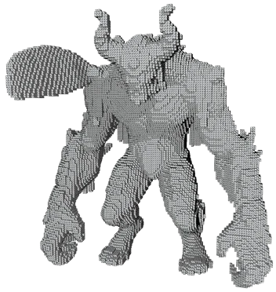
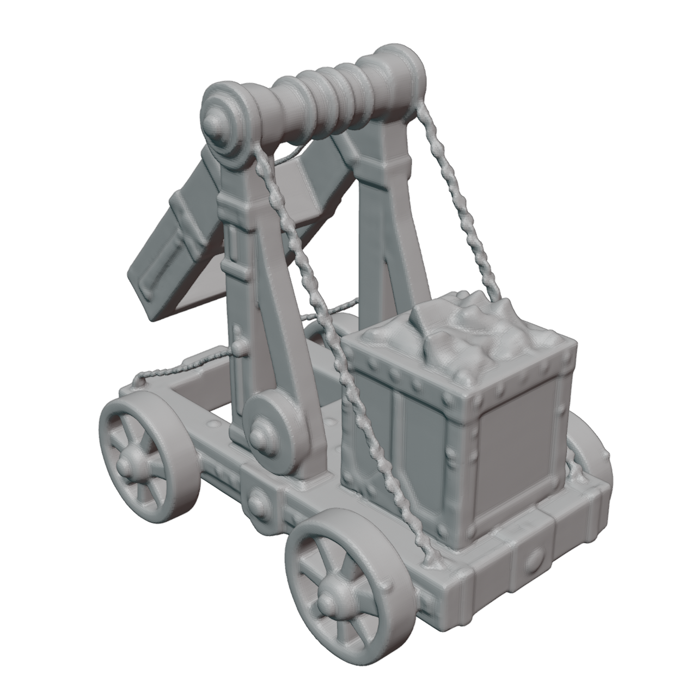
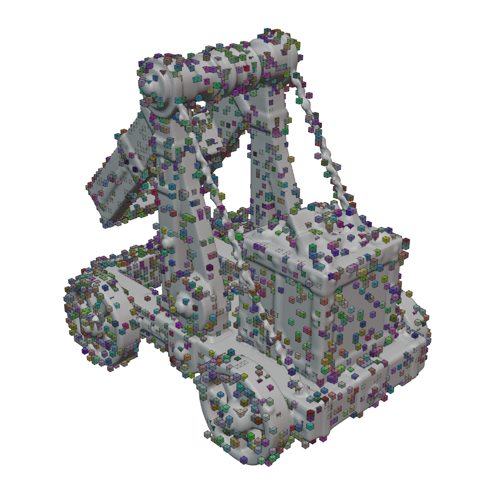
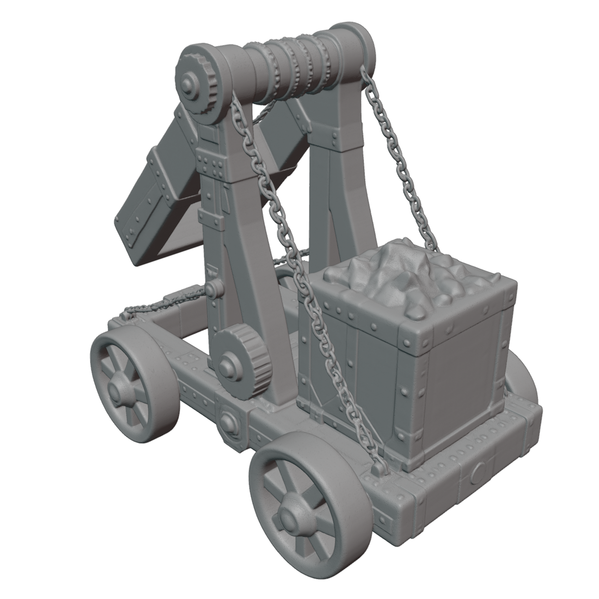
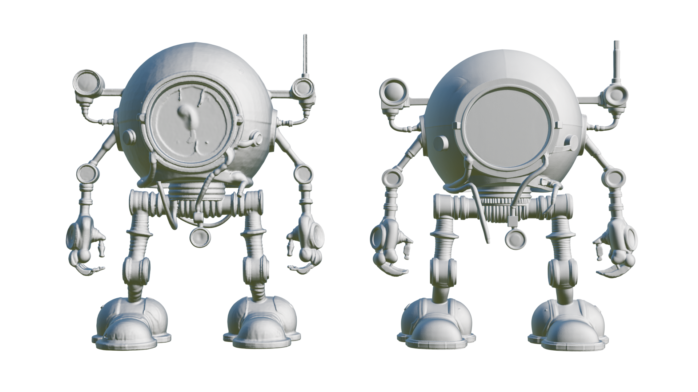

VARCO 3D: 3D Generative AI Service
Project Overview
VARCO 3D is NC AI's commercial 3D generative AI service for producing textured 3D assets from generative model pipelines. My role has been focused on core algorithm research and development for the VARCO 3D team: training 3D generative models, setting technical directions, and connecting research prototypes to service-oriented generation pipelines.
The project sits at the intersection of native 3D generation, mesh-oriented geometry synthesis, and texture generation. Rather than relying on slow optimization-based SDS pipelines, the development direction moved toward feed-forward 3D generation systems that can better satisfy production constraints: generation speed, mesh usability, topology quality, texture fidelity, and commercial deployability.
Core contributions represented in this draft:
- Service-oriented 3D generation R&D: contributed to the algorithmic development of NC AI's flagship 3D generation service.
- CaPa-to-VARCO pipeline expansion: evolved the CaPa direction into a broader service pipeline combining geometry generation and texture generation.
- Sparse voxel model development: explored high-detail sparse voxel generation for the VARCO 3D 1.0-preview direction.
- Fast active voxel preparation: implemented CUDA-based mesh-to-voxel distance computation, reducing the coarse-mesh-to-active-voxel preparation process to under 5 seconds.
- VecSet-Lattice refinement: trained a structure-aware DiT model with voxel-query positional conditioning, improving convergence speed and mesh robustness.
Project Details
- Role: Core 3D Generation Model R&D
- Category: Commercial AI Service, 3D Generation
- Organization: NC AI
- Technology: ShapeVAE, DiT, Rectified Flow, Sparse Voxel VAE, VecSet, Lattice, CUDA
- Service URL: VARCO 3D
- Related Blog: Varco3D: A Year in Review
- Related Project: CaPa
Technical Direction
VARCO 3D's development can be understood as a transition from optimization-driven 3D generation to feed-forward native 3D generation. Earlier SDS-style methods were compelling because they could reuse strong 2D diffusion models, but they suffered from practical limitations for game-ready or production-oriented assets: saturated color, Janus artifacts, slow per-asset optimization, and noisy geometry.
The direction that became more practical was to split the problem into two major stages:
- Geometry generation: generate a mesh-oriented 3D structure using native 3D latent representations.
- Texture generation: synthesize multi-view texture observations and back-project them to the generated mesh.
This direction built on lessons from CaPa and extended them toward a service setting where speed, quality, and controllability matter simultaneously.
VARCO 3D Alpha
The initial VARCO 3D alpha pipeline followed a CaPa-inherited architecture:
- Geometry: ShapeVAE + DiT / flow-based generative modeling.
- Texture: multi-view image synthesis and mesh texture back-projection.
One of the key observations from this phase was that geometry generation has a different scaling profile from 2D image generation. Compared with RGB images, artist-authored mesh geometry has less background variation and less high-frequency visual complexity, making native 3D geometry training a tractable direction under realistic compute constraints.
Sparse Voxel Preview
After the alpha release, sparse voxel-based methods became an important technical inflection point. Sparse voxel representations changed the problem structure: instead of forcing one model to generate every detail globally, the system can separate global shape from local detail refinement.
The core engineering challenge was how to provide active voxel information efficiently. To avoid the cost of generating high-resolution active voxels from scratch, I proposed using a coarse mesh generated by the existing VecSet-based model, then voxelizing that mesh as the input structure for the sparse voxel DiT.
| Coarse Mesh | Voxelized Active Structure |
|---|---|
 |
For this stage, I implemented a CUDA kernel for parallel mesh-to-voxel distance computation. This reduced the pipeline from coarse mesh generation to active voxel generation to under 5 seconds, making the sparse voxel refinement direction more practical for service-oriented inference.
The resulting sparse voxel-based model was presented internally as the VARCO 3D 1.0-preview direction.
VecSet-Lattice Refinement
The later direction revisited VecSet-based generation through a Lattice-style coarse-to-fine formulation. The key idea was to preserve the global shape capability of VecSet models while injecting stronger spatial structure into the generative model.
In this setup:
- A coarse mesh is first generated.
- The coarse mesh is voxelized.
- Representative voxel queries are sampled.
- A structure-aware DiT uses the voxel query coordinates through positional conditioning to generate refined geometry.
| Coarse Mesh | Voxel Query | Fine Mesh |
|---|---|---|
 |
 |
 |
This refinement direction showed a major training-efficiency improvement. Where the earlier VecSet DiT setup took much longer to converge, the structure-aware DiT with voxel-query conditioning converged in roughly one day in the reported development setting.
Sparse Voxel vs. VecSet-Lattice
The VecSet-Lattice direction showed detail comparable to or better than the sparse voxel preview while producing more robust mesh topology and fewer artifacts.

Result
Varco3D 1.0
VARCO 3D became a clear turning point in my work: from isolated 3D generation research toward building a commercial 3D AI service. The project required connecting model architecture decisions, training strategy, GPU-scale experiments, CUDA-side preprocessing, texture synthesis, and product constraints into one practical generation pipeline.
For the full technical retrospective and development narrative, see the related blog post: